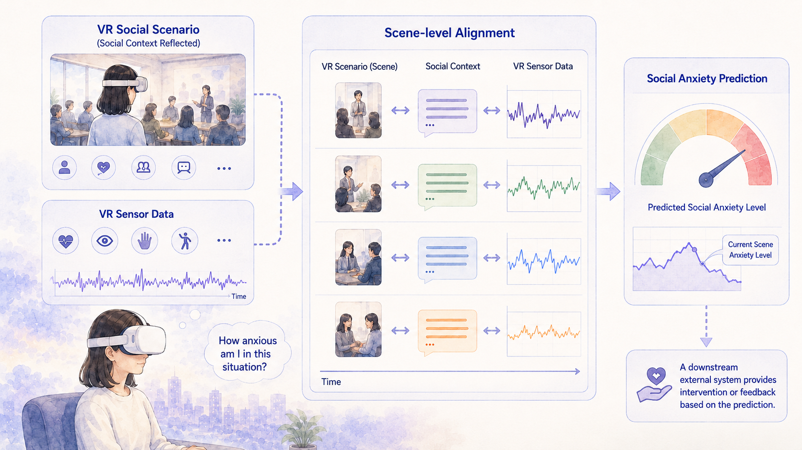

LLM-Based Context-Aware Social Anxiety Prediction Using VR Data
We develop an LLM-based model to predict users’ social anxiety levels in a VR exposure therapy environment. Using an LLM, we extract scene-level social context from VR videos and align it with VR sensor data. Through this approach, we aim to more accurately predict users’ anxiety levels, incorporating variations across social situations.
Ongoing project


 YouTube
YouTube